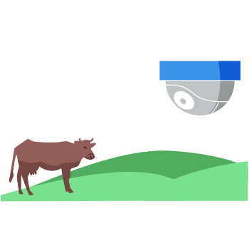
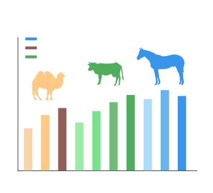

-
实时定位
- • 支持定时定位和按需定位，在节约终端能耗的同时又能满足客户及时了解牲口实时位置的需要。
- • 支持GPS、北斗、基站及多种模式混合定位， 定位精度高达米级。
-
轨迹回放
- • 不仅可以看牲口当前位置信息，还可以回溯查看牲口的运动轨迹、停留时长、运动步数、消耗卡路里、牲口种类等信息。
- • 支持半年以上的轨迹数据回放。
-
消息中心
- • 设备告警、围栏告警及位置等上报数据以实时看板形式更新滚动，为远程设备和牲口状态异常诊断提供判断依据。
- • 支持一键定位到告警设备或牲口位置。
-
电子围栏
- • 电子围栏功能帮助牧民实现线下牧场可视化，超限告警使得掌上放牧更直观、方便和快捷。
- • 支持不规则多边形电子围栏和春、夏、秋、冬牧场类型设置，更符合实际牧场情形。
-
视频监控
- • 集成牧场视频图像数据，从牲口个体定位到牧场整体视图一目了然，让认养者、放牧人和监管人员对牲口和牧场情况了解更立体、更全面。
- • 支持地图上一键播放牧场视频图像。

-
统计分析
- • 提供牲口、牧民、牧场设施等多维度统计分析，为草原畜牧业和草原生态提供全方位的分析洞察手段。
- • 结合运营商大数据、移动气象大数据和GIS数据，为草原生长治理环境监测及牧场和牧民监管提供有效依据。
